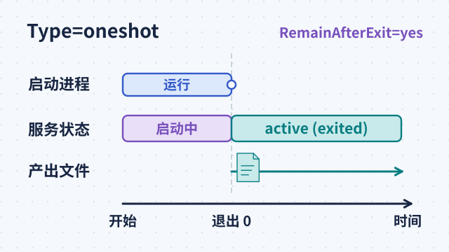

序言
有些程序需要一直运行，有些只负责在开机时生成一份文件。两者都可以交给 systemd 管理，但启动完成后，它们在进程列表里的样子完全不同。读一次性服务的状态时，最好把“程序还在不在”和“工作有没有完成”分别记下来。
服务单元和进程有不同的寿命
进程是正在执行程序的一次实例，有进程号、地址空间和退出时刻。systemd 的服务单元则是一份管理约定，说明何时启动、调用什么程序、如何判断成功、与哪些单元存在依赖。一份单元文件可以多次启动，每次产生的进程号都可能不同。
把时间轴画出来最容易分辨三者的寿命。启动前文件可能不存在，执行时有进程和 PID，成功退出后 PID 消失，结果文件仍在。对启用 RemainAfterExit 的单元，管理器还会保留“已启动”这个状态。它们各有自己的开始和结束时刻。
例如一个开机任务要生成供其他程序读取的索引。写索引的程序完成后就退出，索引仍然留在磁盘上。另一个服务是 HTTP 服务器，需要有进程持续监听端口才能回答请求。两者都能启动成功，系统却只能在后者运行期间找到相应的常驻进程。
当多个单元需要排队启动时，启动完成的定义尤其重要。启动一个很快退出的准备任务，希望依赖它的工作等到准备程序成功结束以后再继续。用时序描述需求，比单凭服务名里有没有“daemon”来猜类型更可靠。


Type=oneshot 在等待什么
对 Type=oneshot，管理器会等待启动命令退出，再判断该次启动操作的结果。绝大多数程序遵循退出码零表示成功、非零表示失败的约定，单元配置也可以显式把某些退出值视作成功。因此，看到命令已经消失，还不足以知道启动是否成功。
若同时设置 RemainAfterExit=yes，启动命令成功退出后，单元可以保持 active，子状态显示 exited。这意味着管理器记住了“这一轮已经完成”。此时再次请求启动一个已处于 active 的单元，通常不会重新执行启动动作。真正需要重跑，应按单元语义执行重新启动，并考虑停止动作的影响。
没有设置该选项时，一次性动作也可以成功，随后单元回到 inactive。ActiveState 是此刻的管理状态，退出码描述的是一次命令结果。这也解释了为什么一项已成功完成的短任务，几秒后查询时却显示为 inactive。
退出信息怎样从子进程传回来
在 Linux 里，父进程可以通过 waitpid 等接口取得子进程状态。返回时需要区分正常退出和因信号终止。只有确认是正常退出时，解释退出码才有意义。如果等待过程被信号中断，见到 EINTR 也不能直接据此宣布子进程失败。
假设准备程序按配置运行，打开目标文件、写入内容、关闭文件，然后以零退出。管理器据此能知道程序报告了成功。它无法单凭这个退出状态证明文件中的索引语义正确，更无法保证文件以后不会被其他程序改写。若程序因无法创建文件而返回非零，那才是“这个启动动作本身失败”的证据。
举个反例：准备程序成功写了文件，却在记录审计信息时出错并返回非零。文件存在与启动失败可以同时发生。处理这种故障需要读日志中的失败位置，并核实已有文件的完整性，直接在后台再启动一份相同程序可能重复一部分操作。
从三个入口读同一次运行
可以挑一个自己有权限查看的一次性单元，把命令中的 example.service 换成实际名字。用 systemctl cat example.service 看类型、启动命令和覆盖配置，用 systemctl show example.service 看 ActiveState、SubState、Result、ExecMainCode 与 ExecMainStatus，再用 journalctl -u example.service -b 查看本次开机里的日志时间线。这几项都是读取操作。
最后检查这项工作承诺产生的结果。对于索引文件，可以核对时间、格式和一项可预期的内容。对于常驻 HTTP 服务，则可检查端口和应用响应。如果界面显示 active (exited)，进程列表找不到准备程序，而文件内容也正确，这三条记录恰好相互吻合。